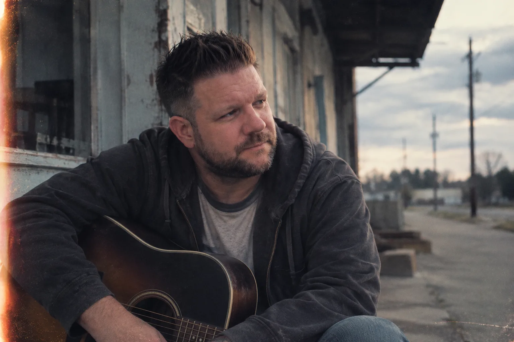

02 / behind the songs
the story
superordinary is a solo melodic alternative-rock project built around a simple idea: the extraordinary presence of God can be found in ordinary life.
It grew out of a feeling I've carried most of my life: being the one who gets passed over. The last one picked, the first to miss out, watching the blessings land on everyone else. These songs are about learning that grace doesn't skip the overlooked. It goes looking for them.
The six songs follow that road in order: a kingdom built for one, the act I hid behind, the things I couldn't hold on to, the fear of being forgotten when the lights go out, and finally the quiet realization that He'd been walking next to me the whole way. He was here all along.
Drawing on the guitar-driven alternative rock of the late ’90s and the melodic, piano-rich indie rock of the early 2000s, the songs explore faith, doubt, nostalgia, redemption, and the beauty of being human.